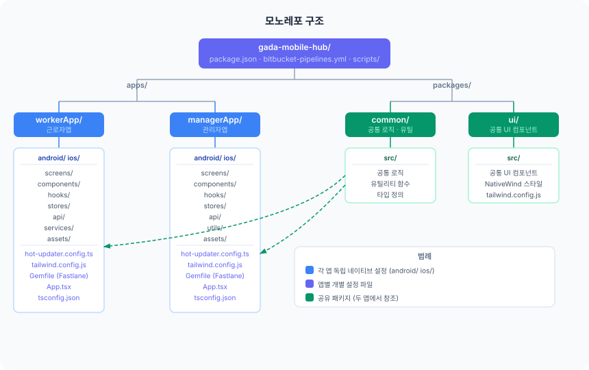
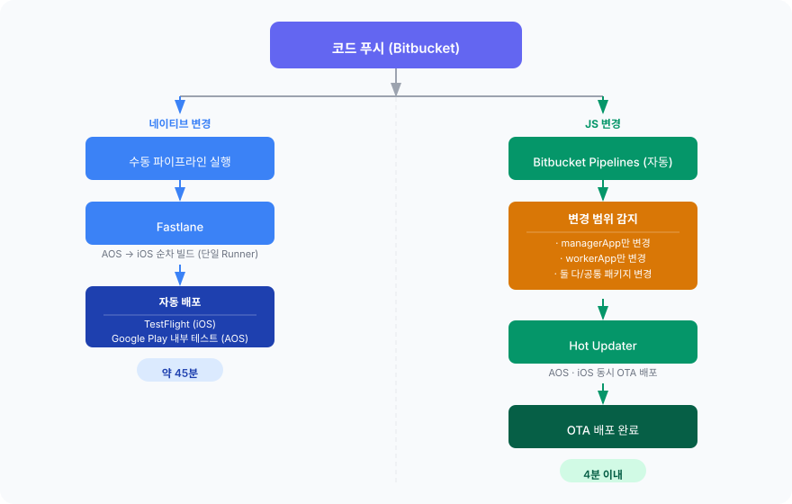
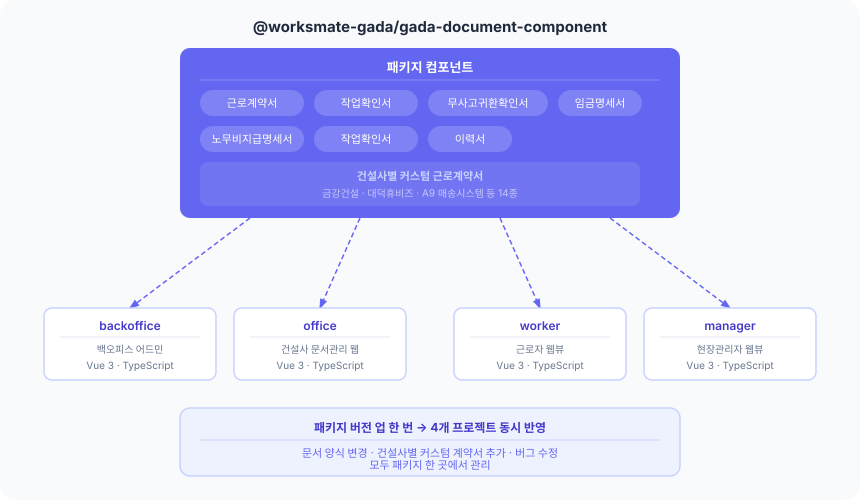
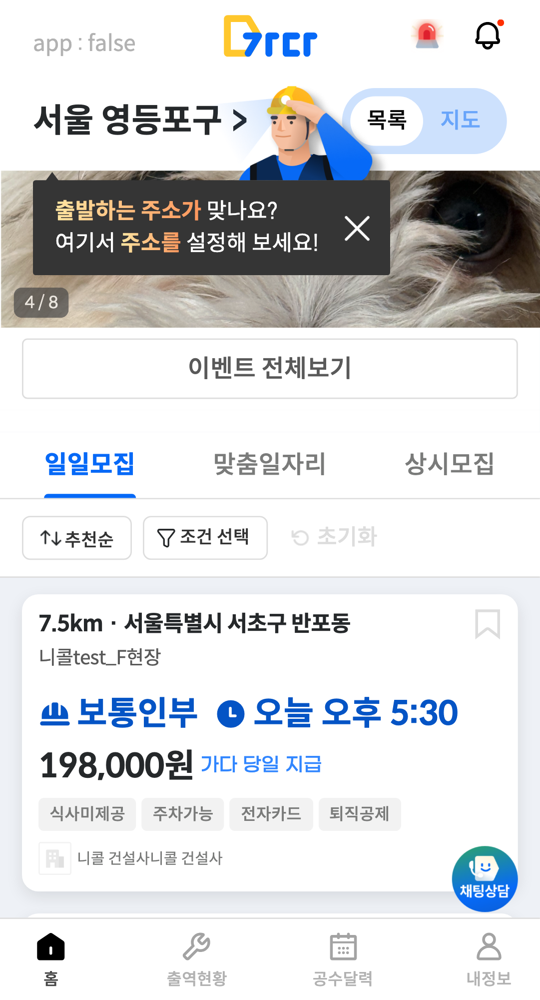
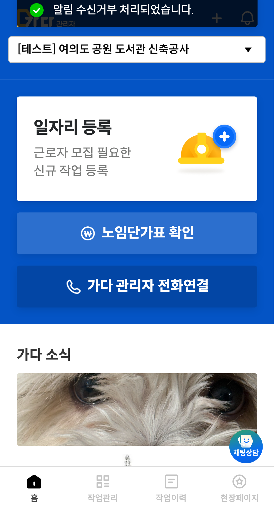

웹과 앱(React Native)을 단독으로 설계·배포하고, 팀이 반복하던 일을 자동화로 없애는 7년차 프론트엔드 엔지니어입니다. 건설 일용직 HR 플랫폼 '가다'에서 백오피스와 모바일 앱의 React Native 전환을 주도했고, 사내 개발 파이프라인 자동화 10여 종을 단독 구축·운영합니다. 2026.08부터 기획·FE·BE 3인 크로스펑셔널 파트의 파트장으로 제품 방향·우선순위 조율부터 실무까지 이끌고 있습니다.
hyepago@gmail.com · github.com/hyejin-1010
Career 총 약 7년
2023.09 — 현재
Worksmate2026.08~ 파트장 · 기획/FE/BE 3인 파트
2020.11 — 2023.05
Hello Factory
2020.03 — 2020.11
HAII
2019.01 — 2020.02
O2Palm
Skills
Web Front-EndVue 3 · TypeScript · Vite · Pinia · Tailwind · PrimeVue
개발 생산성 · 인프라Fastlane · Bitbucket Pipelines · OTA(Hot Updater) · Docker · Playwright·Maestro E2E · AI 에이전트 오케스트레이션
Backend (확장 중)Laravel·PHP · FastAPI·Python
Selected Work
가다 앱 — Flutter 유지보수 → React Native 전환
2023.11 — 현재 · RN 전환·초기 구조 단독 주도 → 이후 공동 개발
2년간 유지보수한 Flutter 앱의 구조적 한계(기술 부채·두 언어 병행·레포 분리)를 근거로 React Native 전환을 직접 제안, 구조 설계부터 배포 파이프라인까지 단독 구축했다. 근로자앱·관리자앱을 단일 모노레포로 통합했다.
네이티브 화면 OTA 배포 1~3일 → 4분 이내 — 웹뷰의 즉시 배포 속도를 네이티브 영역까지 확장
앱 crash-free 사용자 99.96% / 세션 99.99% 유지
Fastlane + Pipelines 배포 자동화 · iOS·Android 병렬 빌드 40분 → 20분 — 트리거 후 개발자가 기다릴 필요 없음
OTA 번들 업데이트(JS 재시작)에도 딥링크가 유실되지 않는 보존 설계
오픈소스: channel_talk_flutter에 API 추가 PR 머지 (v4.1.0)
전환 판단. 수정 비용이 재구축 비용을 넘었다고 판단해 전환을 제안했다. RN 선택의 핵심은 웹 개발자가 별도 언어 없이 앱을 유지보수할 수 있다는 점 — 스타일도 웹과 같은 Tailwind 체계(NativeWind)로 통일했다. 사용자가 앱이 바뀐 걸 인지하지 못해야 한다는 전제로 기존 기능·UX를 1:1 재현했다.
OTA 리스크 관리. 도구 선정 단계에서 롤백 지원을 필수 기준으로 두고 Hot Updater를 선택, 복구 절차를 검증했다.

근로자앱·관리자앱 모노레포 구조

배포 파이프라인 — 스토어 빌드 · OTA
사내 개발 파이프라인 자동화 — AI 에이전트 오케스트레이션
2024.06 — 현재 · 단독 설계·구축·운영 · Python, Slack Socket Mode
프론트 2명 팀의 반복 작업(이슈 처리·배포 상태 관리·크래시 트리아지·정형 문서 생성)을 AI 에이전트를 오케스트레이션하는 자동화로 옮겼다. 이슈·배포·문서·리포트 등 자동화 10여 종을 상시 구동하고, 이를 감시하는 워치독 4종을 별도로 두어 운영한다.
적용 범위를 의도적으로 한정 — 핵심 제품이 아닌, 크래시 대응·보조 서비스 유지보수처럼 반복적이고 범위가 명확한 작업에만
정형 문서 자동 생성 — 엑셀 한 장 → PDF/xlsx. 건당 평균 2시간 걸리던 수기 작업을 요청자 셀프서비스로 전환, 개발자 관여 5분 이내
워치독 4종 — 파이프라인 실패·봇 연결 끊김·수집 키 오염·토큰 만료, 침묵 실패를 감지해 경보·자동 복구
가다 백오피스
2023.10 — 현재 · 초기 설계·구축 단독 주도 → 이후 공동 개발 · Vue3, TypeScript, Vite
화면 100여 개 규모 어드민을 착수 시점부터 설계했다. 회사 첫 TypeScript 도입을 제안해 정착시켰고(이후 신규 프로젝트 기본 채택), 공통 컴포넌트 83종으로 UI 표준을 만들었다.
상세 폼은 배열 정의만으로 렌더링 — 새 메뉴 추가 시 폼 구현 비용 최소화
공통 useList에 500ms debounce 한 곳 적용으로 전 목록 화면의 중복 호출 제거 + axios 캐시·함수 단위 import
동일 columns 정의로 데스크탑 테이블 ↔ 모바일 카드뷰 자동 전환
CustomInput 추상화 재판단 — 타입 30종 돌파 후 독립 컴포넌트 추출 방향으로 전환
사내 ERP (HR·근태·휴가·전자결재) — 자기주도 사이드
2026.06 — 현재 · 기획·설계·구현·배포 단독 (근무 외) · TS 풀스택 모노레포, Docker
외부 그룹웨어를 대체하는 사내 ERP를 근무 외 시간에 혼자, 기획부터 배포까지 끌고 간 자기주도 프로젝트. api+web 모노레포(화면 38) · 자체 인증 · Docker+CI. 구현은 AI 페어프로그래밍으로 가속하되, 아키텍처·인증·배포 등 핵심 설계 결정은 직접 내렸다.
사내 개발 실험실 플랫폼 (dev-labs)
2026.08 — 현재 · 발제·기획·구축 단독 · FastAPI, Vue3, Docker, Traefik
실험 기능을 빠르게 붙였다 뗄 수 있는 멀티 프로젝트 플랫폼을 직접 발제·구축. 배포 콘솔(CLI→웹 UI) · 에러 수집 대시보드 · 근로자 행동 히트맵 · 봇 작업 실시간 대시보드를 운영한다.
사내 전자문서 NPM 패키지
2024.06 — 현재 · 설계·배포·운영 전담 · Vue3, TypeScript, standard-version
4개 프로젝트에 중복 구현되던 전자문서 컴포넌트를 사내 첫 공통 패키지로 통합 제안·구축했다. 커스텀 계약서 18종, 312회 버전 배포. beta 검증 → 안정판 승격 파이프라인으로 소비처 장애를 예방했다.

4개 프로젝트가 소비하는 공통 패키지 구조
가다 근로자앱·관리자앱 (웹뷰 콘텐츠)
2023.10 — 현재 · 근로자앱 핵심 기여 / 관리자앱 공동 개발 · Vue3, Pinia
앱 내 웹 서비스(화면 93·44개) — 출역·이벤트 구좌·포인트몰·QR 안전교육 등 핵심 플로우. 건강검진서 등록·간편인증 연동 등 민감정보 플로우 개발.
푸시·배너 → 목적지 직행 딥링크: 로그인·인증이 개입해도 가로채기→보류→이어처리로 목적지 보존
간편인증 중 OS 앱 종료(메모리 회수) 문제를 진행 상태 저장+재진입 이어하기로 해결·배포
홈 팝업 우선순위·조건 체계 정합화, 공통 풀팝업 통합 · 앱-웹 postMessage 인터페이스 짝 설계

근로자앱 홈 (dev)

관리자앱 홈 (dev)
More Projects
가다오피스
2024.04 — 현재 · 주도 개발
노무 문서 9종 중 6종 — PDF/엑셀 다운로드 공통화(html2canvas+jsPDF+ZIP 암호화)
서버 미지원 일괄 다운로드를 프론트 전용으로 해결
가다 핀페이
2025.05 — 2026.06 · 기능 개발 참여
임금 선지급·정산 핀테크 어드민 (React Native)
직접지급·은행별(전북·iM·하나) 분기, 이체 승인 플로우
사내 알림 시스템
2023.10 — 2026.07 · 주도 개발
Push·SMS 공통 컴포넌트 + type 분기 통합
EUC-KR 차단·바이트 기반 SMS/MMS 전환·법정 문구 자동 처리
WTrust 계약 관리
2024.10 — 2026.07 · 공동 개발(최다 기여)
공통 컴포넌트 초기 설계, allSelectMode(unselected 추적)
무로그인 외부 동의 페이지 — 상태별 분기·권한 제어
Hello Factory
2020.11 — 2023.05 · FE 100%
헬로클릭(교육 SRS) — GraphQL Subscription 실시간, 통계·원격수업
통합 어드민 · 세팅앱(Flutter/BLE)
HAII · O2Palm
2019 — 2020
호핑(Ionic 앱)·통합 어드민 FE 100%
Snowpalm 리뉴얼(40%)·Pic 웹·앱
Education · 기타
2022.03 — 2026.02
숭실대학교 미디어경영학부 졸업
2016.03 — 2019.01
미림여자정보과학고등학교(정보과학) 졸업
오픈소스
channel_talk_flutter — setPreventDefaultUrlClick API 추가 PR 머지 (v4.1.0)